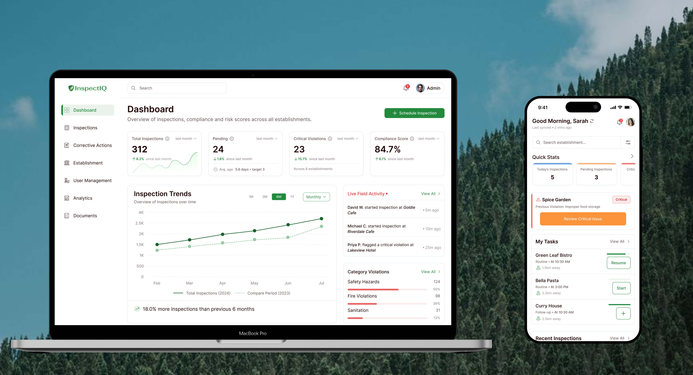
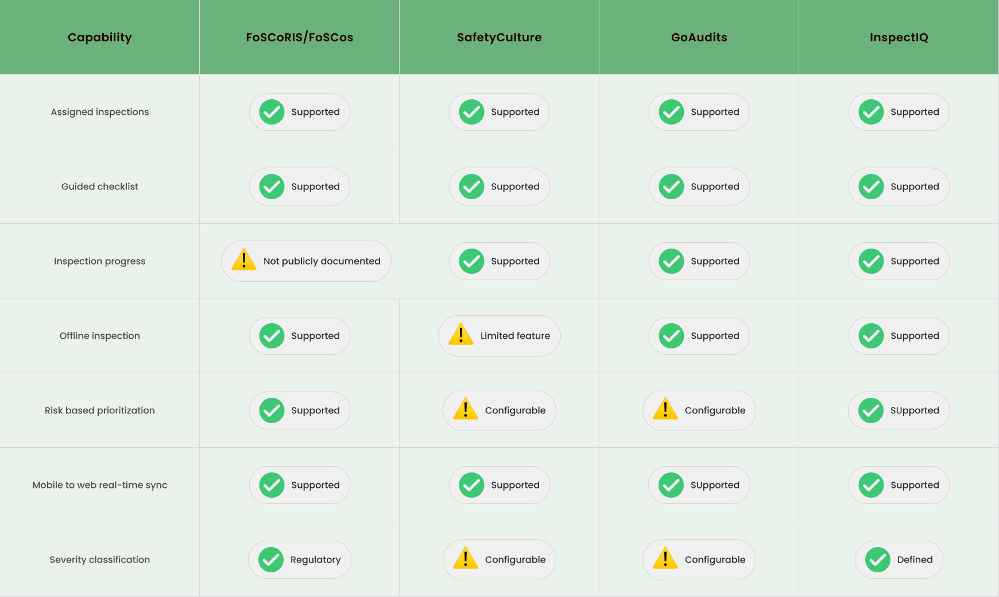
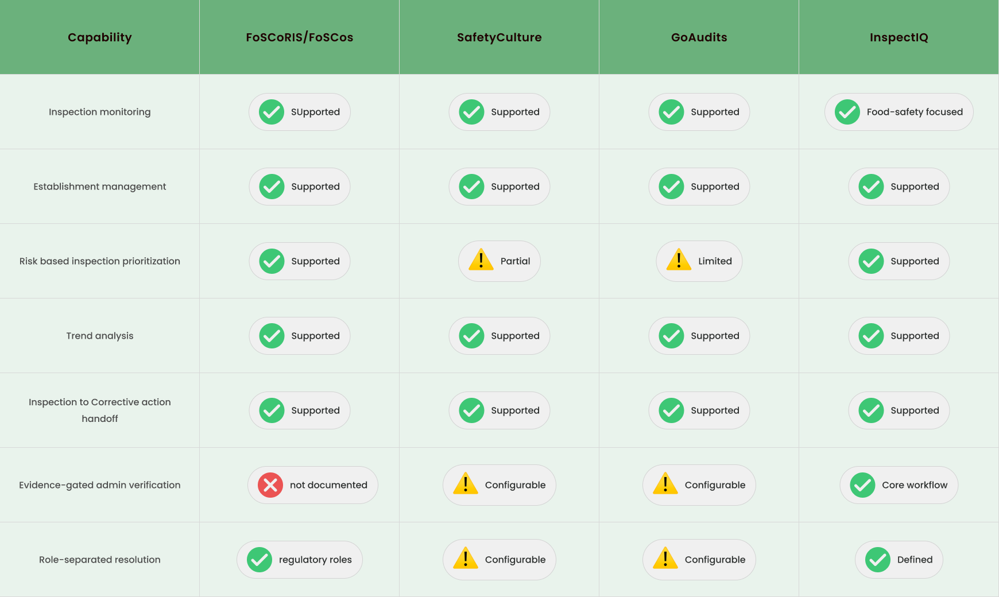
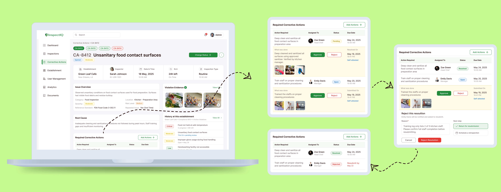
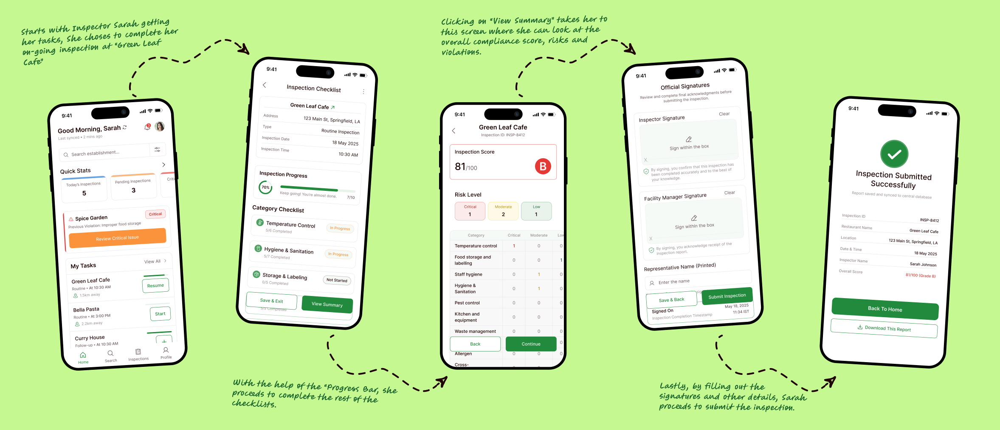
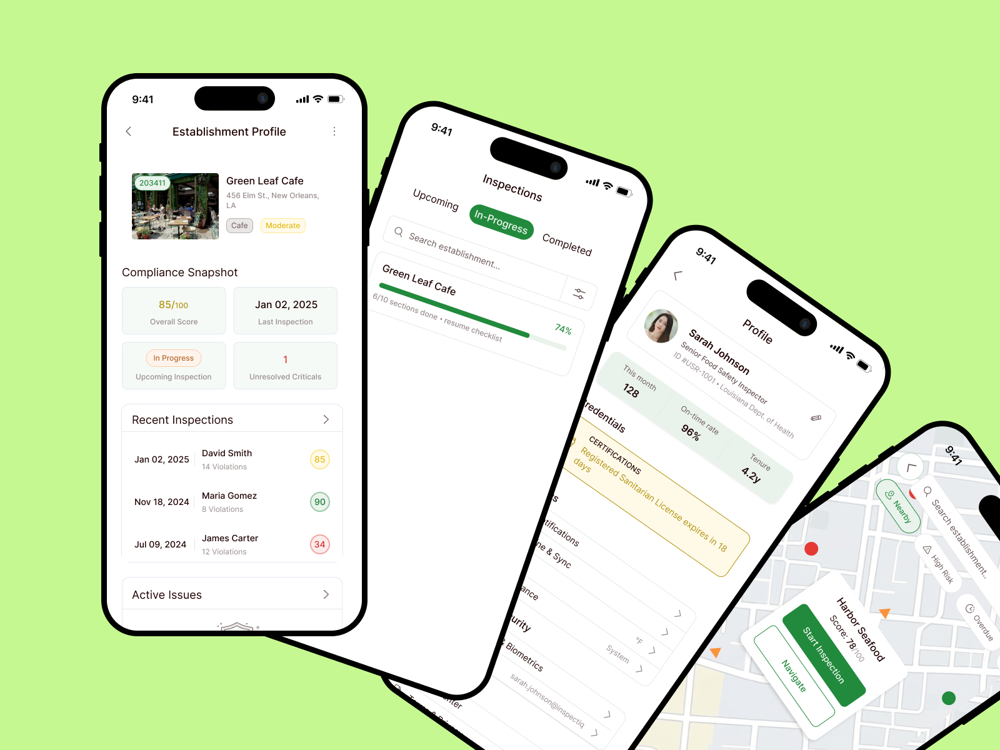
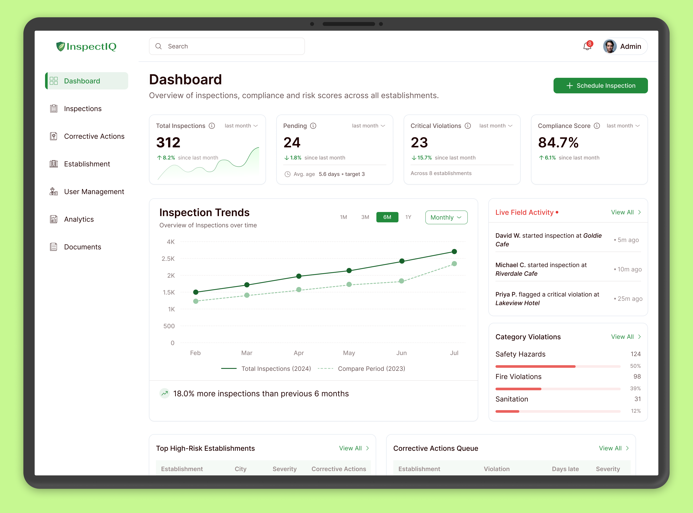
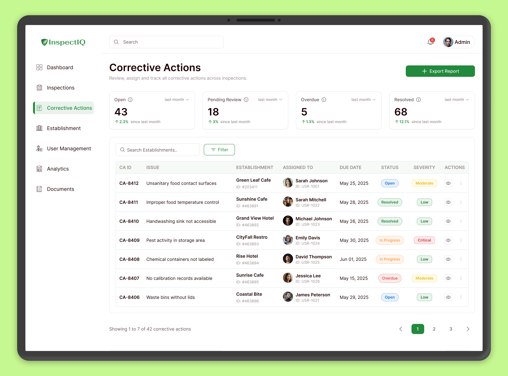
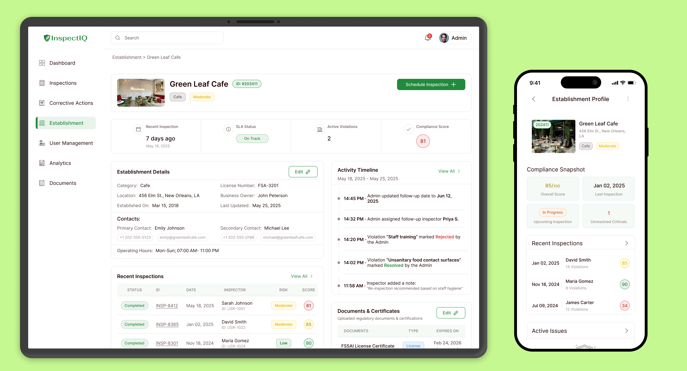

A food safety inspection system built for two very different people: the inspector standing in a walk-in cooler, and the admin trying to make sense of it all from a desk. Mobile app for the field, web console for oversight, designed so a violation isn't done when it's logged, it's done when it's proven fixed.

Food safety inspections generate plenty of information: findings, severity, photos, notes, and corrective actions. The harder problem begins after the inspection ends. Someone still needs to determine what happens next, who is responsible, whether the issue was actually fixed, and whether there is enough evidence to close it.
InspectIQ is a concept for a connected food-safety inspection and compliance system that follows a finding beyond the checklist from field capture to corrective action, verification, and compliance history.
It connects two experiences:
The inspector works in a physical environment and needs to capture findings quickly without interrupting the inspection. The admin reviews findings later, often across multiple establishments, and needs enough evidence and context to make a defensible decision.
Needs:
Constraints:
Needs:
Constraints:
The problem isn't simply capturing a violation. It's preserving enough structure across the handoff so that someone else can understand what happened, what was done about it, and whether the fix can be trusted: inspector captures the problem → someone carries out the corrective action → admin verifies the evidence → the system records the outcome.
How might we connect fast, low-friction field inspection with structured administrative review so that findings remain traceable from the moment they are captured to the moment they are verified?
That meant designing more than a checklist. The system needed to preserve severity, evidence, ownership, corrective action, and history across both platforms without slowing down the inspector or overwhelming the admin.
I compared FoSCoS/FoSCoRIS, SafetyCulture (iAuditor) and GoAudits across the field inspection and post-inspection workflows. Rather than comparing features alone, I looked at how each product connects field findings to corrective action, review, and follow-up.
Regulatory food-safety ecosystem supporting inspection, compliance and field operations.
General-purpose inspection and operational compliance platform built around frontline workflows.
Digital auditing platform focused on inspections, corrective actions and operational follow-up.
A food-safety inspection and compliance system connecting field inspections with risk intelligence and resolution.


The core challenge wasn't designing two separate experiences. It was deciding what information had to survive the transition from a fast field interaction to a deliberate administrative review.
The inspector should be able to submit a structured record without slowing down, while the admin should receive enough evidence and context to make a defensible decision.
The research pointed to a simple requirement: the system couldn't just record findings. It had to carry them through a traceable lifecycle. These four principles became the rules behind the experience across both platforms.
Severity should determine attention. Critical findings need stronger visibility and faster action than lower-risk observations, so risk remains visible from the checklist to the admin dashboard.
What an inspector captures in the field should remain attached to the finding later, severity, evidence, observations, corrective action, and ownership so admins don't have to reconstruct the story.
A corrective action isn't complete because someone changed its status. Submitted evidence must be reviewed before an admin can approve the fix and close the finding.
Ownership and permissions should reflect real responsibilities. Inspectors can record and evidence findings, while administrative actions such as approval, rejection, and record management remain appropriately controlled.
A violation is rarely one problem with one fix. For example, unsanitary food-contact surfaces might require the kitchen to be deep-cleaned today while staff are retrained later in the week. Those are different tasks, with different owners, evidence, and completion timelines.
Instead of treating the violation as a single Open / Resolved status, I modeled it as a parent record containing independent corrective sub-tasks. Each task moves through the same review lifecycle, while the parent status is computed from their individual states.
Violation logged and corrective action assigned with an owner and severity based due date.
The fix is submitted with evidence of what was done, by whom, and how it was verified.
An admin has reviewed and approved the evidence for every corrective sub-task.

A violation reaches "Resolved" only when every corrective sub-task has cleared review. One approved fix and one rejected fix keeps the parent violation open.
The person who submits a resolution cannot approve it. An admin reviews the evidence before the task can move to Resolved.
A rejected fix requires a reason and can trigger a reinspection, carrying the original rejection context forward so the next visit starts with the right information.
Admins can escalate, reassign, or reopen a case, but they cannot manually select "Resolved." The system derives that state from completed and verified sub-tasks.
This model makes the status meaningful: A violation can only close when the work behind it has been completed, evidenced, and independently verified.
The inspection flow was designed to guide inspectors through every critical step, from selecting an assigned establishment to completing the checklist, reviewing compliance results, collecting signatures, and submitting the final report.

The mobile experience extends beyond the inspection itself, giving inspectors quick access to establishment history, upcoming inspections, profile, and location-based tasks.

While inspectors work in the field, admins need a centralized view of the data being generated. The web console connects individual inspections into a broader compliance workflow, helping teams monitor performance, identify risks, review reports, and manage corrective actions.
See inspections, risks and overdue actions.
Open a finding and understand what happened.
Assign corrective work with clear ownership.
Review evidence before accepting completion.
Identify recurring issues across establishments.
These three moments show how a finding moves from visibility → verification → historical context.



Together, these views turn individual inspection findings into an ongoing compliance workflow, from detecting a problem to verifying the fix and recognizing whether it happens again.
With 11 admin screens and a mobile flow all pulling from the same underlying data, the biggest risk to the system wasn't a missing feature. It was drift: two screens quietly disagreeing about the same finding. Reviewing every screen against the same set of records, three recurring issues surfaced, and each one changed how I designed the system going forward.
KPI cards on the dashboard and the tables beneath them were built at different times and quietly drifted out of sync, a "12 overdue" summary card sitting above a table that only listed 9. The fix wasn't cosmetic: every summary number now traces back to a single, explicit filter definition that both the card and the table query, so the two can't disagree.
"Critical," "High risk," and "Severity" were being used for the same concept in different parts of the flow, sometimes with different color codes attached. Left alone, this is the kind of inconsistency that erodes trust in a compliance tool specifically, since severity is the signal admins triage by. I standardized a single severity taxonomy and color mapping and audited every screen against it.
The same object was labeled differently depending on which screen you were on: "Corrective Action" vs. "CA" vs. "Remediation," "Establishment" vs. "Location" vs. "Site." Individually minor, but compounding across 11+ screens, it makes the system feel like several tools stitched together rather than one product. I built a short naming reference and used it to relabel every screen.
This is also the biggest gap I'm carrying into the next iteration: these were caught through my own structured review, not through testing with an inspector or compliance admin. The taxonomy and naming decisions are my best judgment of what would hold up, not validated ones yet.
InspectIQ is a concept project, so I am not presenting simulated business metrics as real outcomes. Instead, the impact here reflects the concrete workflow improvements the design was intended to create.
Before: A violation could be treated as resolved through a status update.
After: Resolution is tied to submitted evidence and admin verification.
Before: A corrective action could hide multiple incomplete requirements behind one overall status.
After: Each corrective sub-task has its own owner, evidence, and verification state.
Before: Understanding whether an establishment had recurring problems required digging through past records.
After: Violation history and corrective actions are connected to the establishment context.
Before: Field inspection and admin follow-up could feel like separate processes.
After: The same structured finding flows from the inspector's checklist to the admin's corrective action review, preserving context and evidence.
The result is not just a way to record inspections. It is a clearer system for turning findings into verified, traceable actions.
Most of the hard problems in this project weren't visual. They were about deciding who gets to change what, and then keeping those rules consistent across the product. I repeatedly found that a seemingly small UI inconsistency could change how a status or number was interpreted elsewhere. That made consistency less of a visual exercise and more of a systems-design problem.
A corrective action couldn't just be a single "Open / Resolved" flag. It needed independently trackable sub-tasks that rolled up into a parent state. Once that model was in place, almost every other decision (evidence-gated review, separation of duties, audit logging) followed naturally from it.